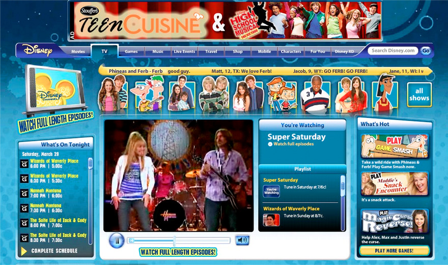
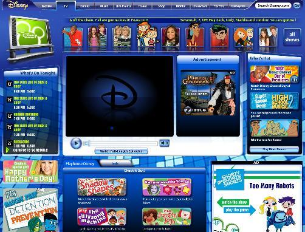
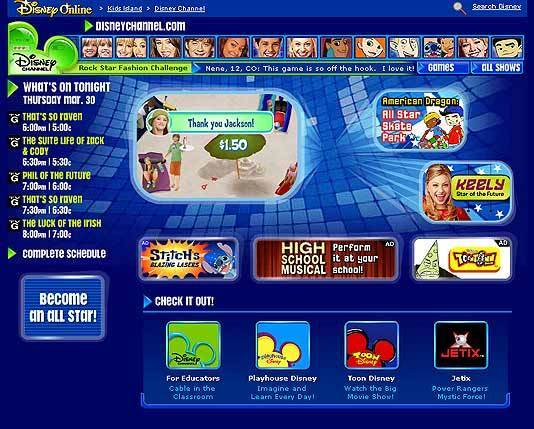

https://www.google.com/url?sa=i&rct=j&q=&esrc=s&source=images&cd=&ved=&url=http%3A%2F%2Fidentity-mag.com%2F11-websites-you-used-visit-kid%2F&psig=AFQjCNEcDqsl_BPvIlDSLbwophU-i7ujug&ust=147741723603405

http://en.academic.ru/dic.nsf/enwiki/6098189

https://www.theodysseyonline.com/12-things-that-people-who-grew-disney-channel-may-have-forgotten-about
DisneyChannel.com is a website for Disney Channel, an American basic cable and satellite television network. In 2003, the site received a great deal of content from the discontinued Zoog Disney, and grew to encompass games, show/character descriptions, and upcoming events.